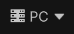

Toolbar reference
The Unity toolbarA row of buttons and basic controls at the top of the Unity Editor that allows you to interact with the Editor in various ways (e.g. scaling, translation). More info
See in Glossary contains a set of controls that you can show, hide, or move. Use the options in the context menu to control the visibility of each control.
For more information, refer to Use the toolbar.
| Property | Icon | Description |
|---|---|---|
| Unity Account |  |
Access your Unity Account from the Account dropdown menu. |
| Asset Store |  |
Go to the Asset StoreA growing library of free and commercial assets created by Unity and members of the community. Offers a wide variety of assets, from textures, models and animations to whole project examples, tutorials and Editor extensions. More info See in Glossary or view your assets in the Package Manager from the Asset Store dropdown menu. |
| Package Manager |  |
Open the Package Manager window. |
| Unity Version Control |  |
Open the Unity Version Control window. To learn more, refer to the Version Control package documentation. |
| AI |  |
Unity’s artificial intelligence (AI) tool that you can use to generate assets and accelerate your workflow. Select Agree and install AI to use UAI in your project. For more information refer to the AI menu reference. To use Unity AI, configure your project for Unity Cloud. |
| Play Mode Controls |  |
Control Play mode in the Game view. Press the Play button to enter the Editor Play mode. Press the Pause button to pause Play mode. Press the Step button to move Play mode forward by one frame. |
| Manage Services |  |
Select the cloud icon to open the Unity Services window. |
| Undo History |  |
Use Undo History to view, undo, or redo actions performed in the Editor. |
| Global Search |  |
Open Global Search. |
| Layout |  |
Change the arrangement of your views and then save a new layout or load an existing one from the Layout dropdown menu. |
| Quality |  | Change the current quality level or open Quality settings. |
| Toolbar Help |  |
Open the Toolbar documentation in your browser. |
Toolbar context menu
The toolbar context menu contains some controls by default. Any new controls you add appear in this menu.
To open the toolbar context menu, right-click in an empty space in the toolbar, or select the More (⋮) menu.
| Property | Description |
|---|---|
| Edit Mode | Select to unlock all controls in the toolbar so that you can drag and reposition them. To exit Edit Mode, press Esc, click outside of the toolbar or select again Edit Mode in the Context Menu. |
| Play mode controls | Toggle to show or hide the Play Mode Controls. |
Editor Controls
The Editor Controls section contains the following controls by default.
| Property | Description |
|---|---|
| Layout | Toggle to show or hide the Layout control. |
| Global Search | Toggle to show or hide the Global Search control. |
| Asset Store | Toggle to show or hide the Asset Store control. |
| Undo | Toggle to show or hide the Undo control. |
| Show All | Unhide all controls in the Editor Controls section. |
| Hide All | Hide all controls in the Editor Controls section. |
Package Management
The Package Management section contains the following controls by default.
| Property | Description |
|---|---|
| Package manager | Toggle to show or hide the Package manager control. |
| Show All | Unhide all controls in the Package Management section. |
| Hide all | Hide all controls in the Package Management section. |
Services
The Services section contains the following controls by default.
| Property | Description |
|---|---|
| Account | Toggle to show or hide the Unity Account control. |
| AI | Toggle to show or hide the AI control. |
| Cloud | Toggle to show or hide the Cloud control. |
| Collab | Toggle to show or hide the Unity Version Control control. |
| Toolbar help | Toggle to show or hide the Toolbar help control. |
| Show All | Unhide all controls in the Services section. |
| Hide all | Hide all controls in the Services section. |
Additional resources
- Unity Services
- Asset Store
- Version ControlA system for managing file changes. You can use Unity in conjunction with most common version control tools, including Perforce, Git, Mercurial and PlasticSCM. More info
See in Glossary - Game view
- LayersLayers in Unity can be used to selectively opt groups of GameObjects in or out of certain processes or calculations. This includes camera rendering, lighting, physics collisions, or custom calculations in your own code. More info
See in Glossary